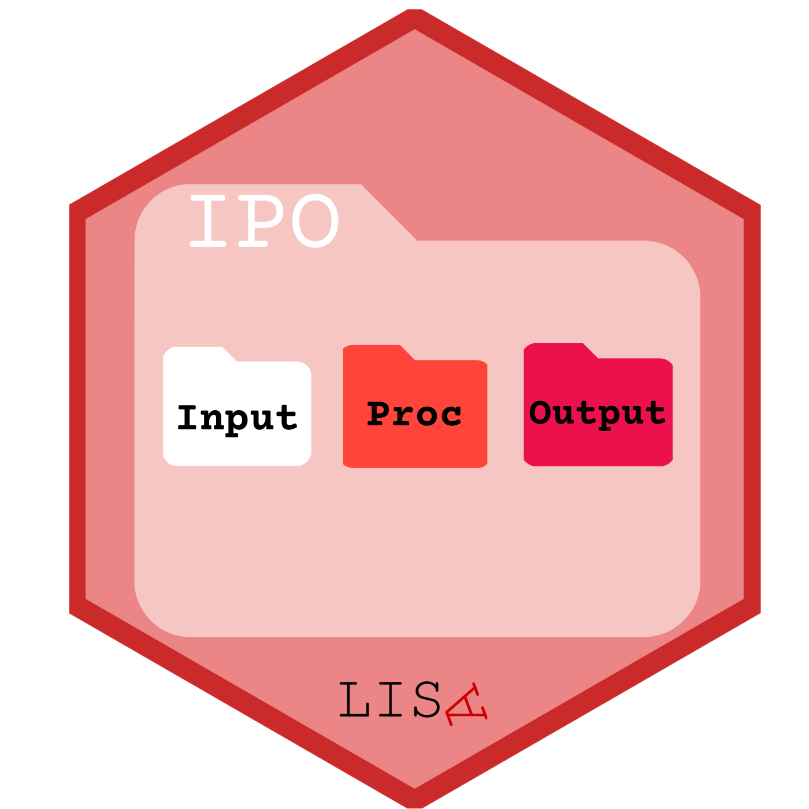
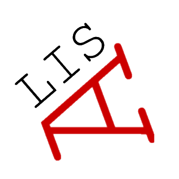
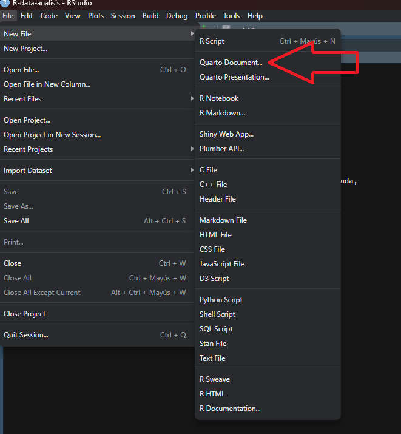
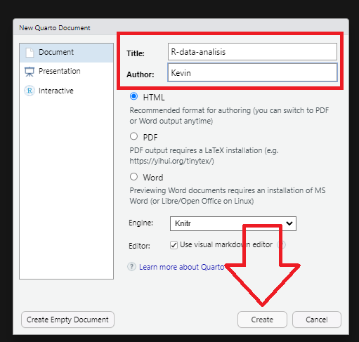
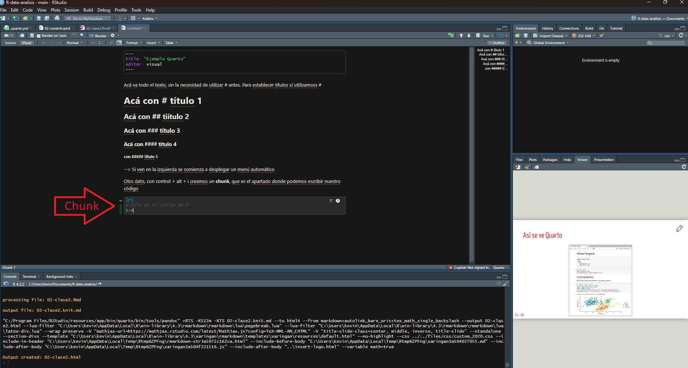

pacman::p_load(dplyr, #manipulacion de datos
sjPlot, #tablas
kableExtra, #tablas
ggplot2, #graficos
summarytools, #estadisticos descriptivos
fastDummies, # Crear variable dummy
sjlabelled, #etiquetas variables
coefplot # graficos de coeficientes
)Introducción al flujo de investigación reproducible
- Protocolo IPO (input-procesamiento-output) para organizar nuestro proyecto)

0.1 RStudio Projects
- File -> New Project


0.2 Abriendo la sesión de RStudio como proyecto
identificar en la carpeta respectiva el archivo .Rproj
ejecutar y se abre R / RStudio con ese directorio como raíz
0.3 Rutas relativas en código
forma de “señalar el camino” para abrir y guardar archivos al interior de una carpeta de proyecto autocontenido (= sin referencias locales)
este camino tiene básicamente 3 direcciones:
bajar -> hacia subcarpetas
subir -> hacia carpetas superiores
subir y bajar -> hacia otras subcarpetas
0.3.1 bajando
para “bajar” hacia a una subcarpeta, simplemente damos la ruta de la carpeta/archivo
ej: si estoy en el archivo paper.Rmd (directorio raíz), y quiero incluir una imagen (directorio input/images/imagen.jpg), entonces la ruta es
input/images/imagen.jpgo para señalar la ruta al bib desde paper.Rmd (en raíz):
input/bib/referencias.bib
0.3.2 subiendo
para subir se utilizan los caracteres
../por cada nivel.Ej: si quiero guardar una tabla en el directorio raíz generada desde un archivo de código en la subcarpeta proc, entonces la ruta es
../tabla.html
0.3.3 subiendo y bajando
combinación de las anteriores
Ej: para abrir la base de datos original en la subcarpeta input/data desde el código de procesamiento en la subcarpeta proc, entonces:
../input/data/original.dat
1 Quarto
La escritura en Quarto tiene algunos códigos o funciones, aquí un resumen de su mayoría:
| Código | Así se ve |
|---|---|
|
Algo de texto. Algo de texto en el párrafo. Siempre utilizando espacios para dividir párrafos |
*Cursivas* |
Cursivas |
**Negrita** |
Negrita |
# Título 1 |
2 Título 1 |
## Título 2 |
2.1 Título 2 |
### Título 3 |
2.1.1 Título 3 |
(puedes llegar hasta un título N° 6 con ######) |
|
[Texto enlace](https://quarto.org/) |
Texto enlace |
 |
 |
> Citas |
|
|
|
|
|
- Abrimos nuestro Rproject y creamos un nuevo documento de Quarto file –> new file –> Quarto document


Nota
YAML: Lenguaje de programación. Es un formato de serialización de datos que proporcionan un mecanismo de intercambio de datos legible por humanos. Dan formato a los datos de manera estandarizada para su intercambio entre aplicaciones de software.

---
title: "Mi Documento"
format:
html:
toc: true
number-sections: true
---Luego, podemos escribir en el documento, separando por títulos (#) cada sección. La jerarquía de los títulos se establece según la cantidad de ‘#’.
A continuación, en esta guía combinaremos el paso-a-paso de crear un documento dinámico con quarto, a la vez que vamos viendo distintas funciones de este proceso.
Por ejemplo, como hacer una nota al pie1. Para hacerlo, solo debemos escribir [ ^2] pero sin el espacio entre los corchetes. Luego, en otra línea escribimos [^2]: Esta es la nota al pie
3 Código de análisis de ejemplo
Para poder escribir código de análisis en un documento Quarto debemos generar trozo de código llamado ‘Chunk’, que se puede crear con ctrl+alt+i o directamente en el menú de arriba en ‘Code -> Insert Chunk’.

3.1 Cargar paquetes
3.2 Cargar bases de datos
Cargamos bases de datos desde internet
load(url("https://multivariada.netlify.app/assignment/data/proc/ELSOC_ess.RData")) # Cargar base de datosview(dfSummary(elsoc_18, headings = FALSE, method = "render"))Switching method to 'browser'Output file written: C:\Users\kevin\AppData\Local\Temp\RtmpKiDR9b\file66206af97bfb.html3.3 Visualizaciones
Podemos establecer referencias cruzadas para las tablas y gráficos dentro del texto, para poder automatizarlo, como ejemplo así, pero dentro del chunk:
#| label: tbl-sjmisc
#| tbl-cap: “Descriptivos con sjmisc”
3.3.1 Descriptivos
El Chunk se debería ver así:
#| label: tbl-sjmisc
#| tbl-cap: “Descriptivos con sjmisc”
sjmisc::descr(data,
show = c("label","range", "mean", "sd", "NA.prc", "n"))%>% # Selecciona estadísticos
kable(.,"markdown") # Esto es para que se vea bien en quartosjmisc::descr(elsoc_18,
show = c("label","range", "mean", "sd", "NA.prc", "n"))%>% # Selecciona estadísticos
kable(.,"markdown") # Esto es para que se vea bien en quarto| var | label | n | NA.prc | mean | sd | range | |
|---|---|---|---|---|---|---|---|
| 3 | ess | Estatus Social Subjetivo | 3703 | 0 | 4.3896840 | 1.579403 | 10 (0-10) |
| 4 | sexo | Sexo (1=Mujer) | 3703 | 0 | 0.3850932 | 0.486683 | 1 (0-1) |
| 1 | edad | Edad | 3703 | 0 | 47.0475290 | 15.506483 | 72 (18-90) |
| 2 | edcine | Educación | 3703 | 0 | 3.2087497 | 1.210395 | 4 (1-5) |
Luego de establecer el link y el nombre de la tabla, podemos referenciar acá con un @, así: @ tbl-desc (pero junto), y que se vería así Tabla 1
3.3.2 Gráficos
Y para los gráficos se hace de la misma forma:
#| label: fig-gdp
#| fig-cap: “Plots”
graph1<-ggplot(elsoc_18, aes(x = edad, y = ess)) +
geom_point() +
labs(x = "Edad", y = "Estatus social subjetivo") +
theme_minimal()+
theme(axis.text.x = element_text(angle = 45, hjust = 1))
graph1Sin embargo la Figura 1 entrega información…
3.4 Regresiones
reg1<-lm(ess ~ edad, data=elsoc_18)
reg2<-lm(ess ~ edad+sexo, data=elsoc_18)
reg3 <- lm(ess ~ edad + sexo + edcine, data = elsoc_18)sjPlot::tab_model(list(reg1, reg2, reg3),
show.ci=FALSE,
p.style = "stars",
dv.labels = c("Modelo 1", "Modelo 2", "Modelo 3"),
string.pred = "Predictores",
string.est = "β")| Modelo 1 | Modelo 2 | Modelo 3 | |
| Predictores | β | β | β |
| (Intercept) | 4.66 *** | 4.60 *** | 2.96 *** |
| Edad | -0.01 *** | -0.01 *** | 0.01 ** |
| Sexo(1=Mujer) | 0.13 * | 0.07 | |
| Educación | 0.36 *** | ||
| Observations | 3703 | 3703 | 3703 |
| R2 / R2 adjusted | 0.003 / 0.003 | 0.005 / 0.004 | 0.067 / 0.066 |
| * p<0.05 ** p<0.01 *** p<0.001 | |||
la Tabla 2 muestra que…
- Luego renderizamos

Notas
Esta es la nota al pie↩︎